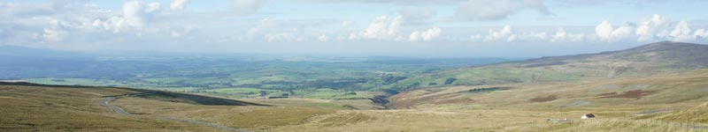
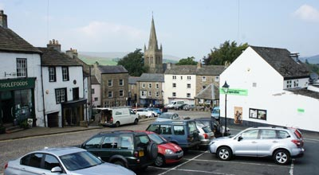
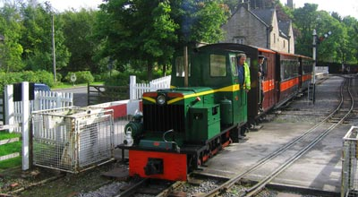
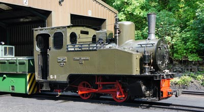
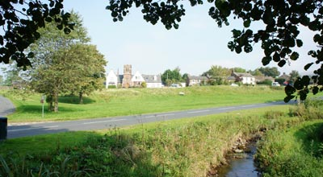
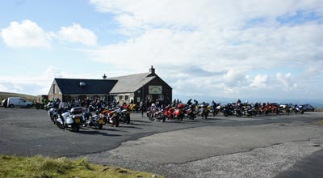

 |
Alston Tourist Information
Alston is England's highest market town. Despite its isolation and standing at an altitude of 1000 feet, Alston is easily accessible along high exposed roads with considerable height gains which have been voted in the top ten of the U.K's most scenic drives. Alston Tourist Information Centre |
|
Alston Attractions |
|
 |
Alston Town Treasure TrailFree entertainment for children and parents as they search for the treasure of pirate Red Beard Nattrass hidden around the town. This is the region's first dedicated QR code Town Trail and by using Smart phones you can scan for the first clue and then go and search for the others. Enquire at the Tourist Information Office for full details. |
South Tynedale Railway This is Englands highest narrow gauge railway on which passenger coaches pulled by lovingly preserved steam and diesel engines operate on a 3.5 mile scenic route through the South Tyne Valley between Alston and Kirkhaugh. Timetables; tickets; fares; special events and details of locomotives and stock are shown on their website. Telephone 01434 381696. |
 |
 |
Walk or cycle the South Tyne Trail A section of the trail starts from the railway station. It has a good walking surface and along the picturesque route you will find wooden sculptures; information and activity notice boards and a picnic site. If you decide on a longer route, start from the town for a circular 8 mile walk along the River South Tyne to the village of Garrigill. |
St Augustine of Canterbury ChurchThe church is an Alston landmark. There's been a place of worship on this site since the 12th Century. The first building was demolished after falling in to ruin and a new one built in the 18th Century, but that too did not survive. The present St Augustines was built in 1869. There are several interesting items inside the church including a 16th Century clock with only one hand and an oak chancel screen which is Alston's war memorial for those killed in World War 1. |
The Hub Museum The museum is opposite Alston Railway Station. It contains examples of local transport; historic photographs; posters and memorabilia of the local area. The museum usually opens from 11am until 4pm on days when the South Tynedale railway is operating. Admission by donation. |
Ashgill ForceFour miles from Alston near the village of Garrigill, Ashgill Force is the highest waterfall in the area. It can be reached by footpath from Ashgill Bridge. |
Alston Town HallThe town hall is the centre for Alston social events. It holds a programme of theatre, shows, music and crafts throughout the year. It has a level entrance, wheelchair accessible toilets, designated parking, a library, and public internet access. |
 |
Hartside PassThere's much to enjoy from behind a steering wheel or over handlebars on the 5 miles and 57 bends to the 1904 feet summit of Hartside Pass and Alston Moor. Beginning from the pretty Eden Valley village of Melmerby, this bikers favourite twists and turns to reach what is claimed to be Englands highest café and a viewing point over a landscape described on the view finder plaque as “500 million years in the making”. On clear days there are long distance views to the Lake District fells of Great Gable and Skiddaw; to Carlisle and Wigton and across the Solway Firth to Scotland. From here, the road bordered by the wide expanse of the moor continues downhill for the last few miles to Alston. |
Epiacum Roman Fort. (Whitley Castle) A few miles from Alston is one of the most remote Roman sites in Britain and until recently all that was known about it came from aerial photography. The site is not excavated but parts of it are clearly visible. Earthwork foundations of the forts buildings have been preserved including the barracks, commanders house and bath house. Altars to Hercules and Mithras have been found here suggesting the possibility of a temple in the area. The site is open to visitors with guided tours and a programme of events including educational events for school groups and archaeological survey days for volunteers. |
 |
Alston Golf Course Alston Golf Club stands 1476 feet above sea level and is probably the highest course in England. It's a 10 hole course with a 17th C clubhouse which is only open at the weekends from approximately 11am until 3pm. It stands two miles from the town on the B6277. |
Alston Bowling Club The summer season runs from May until September. The green is open every evening but by prior arrangement can be open during the day. Find us at Fairhill Recreation Centre. |
Winter Sports Skiing and snow boarding 7 miles from Alston with runs of up to 600 metres depending on snow cover. Please note that the ski area is served by a fast Poma Button Tow and therefore unsuitable for inexperienced skiers. No hire equipment or catering facilities at the moment. |
|
Cash Points in Alston |
|
HSBC in the Market Place. |
Spar Convenience Store, Station Road. Alston. (24 hour) |
Public Toilets in Alston |
|
Alston Town Hall |
Alston Railway Station These toilet facilities are open when the South Tyneside Railway is operating. |
Transportation in Alston |
|
Bus ServicesLocal Company,Wright Brothers Coaches, operate a 7 days a week bus service during summer months linking Alston to Newcastle; Hexham; Penrith and Keswick. The 2015 period of operation is from July 3 until September 27. For details of timings please phone 01434 381200. |
|
Taxi Services |
|
Henderson's Taxis Local Company providing local and longer distance services between 9am and 6pm but can be extended outside these hours for a sightseeing tour or an airport run. Phone 01434 381204 for details. |
Alston Taxis Local and long distance including airport runs. Phone 07990 593855. |
Bicycle Hire |
|
North Pennine Cycles |
|